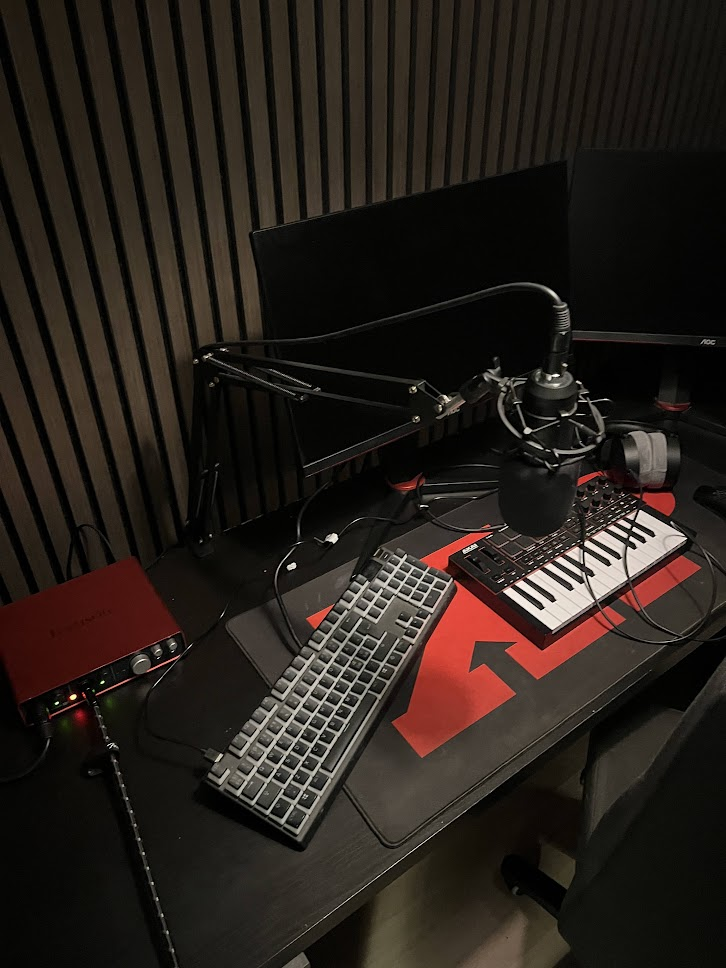
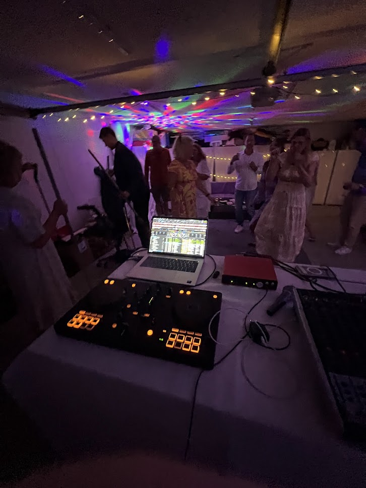
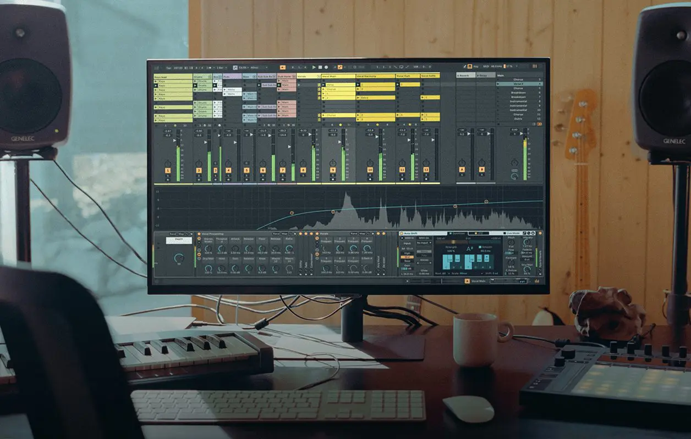
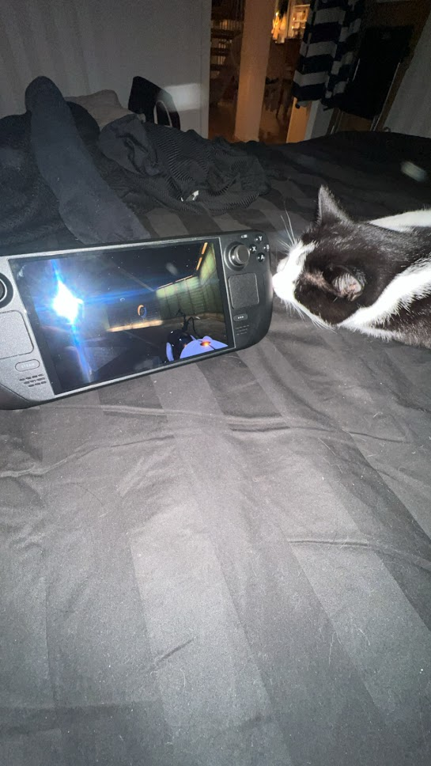
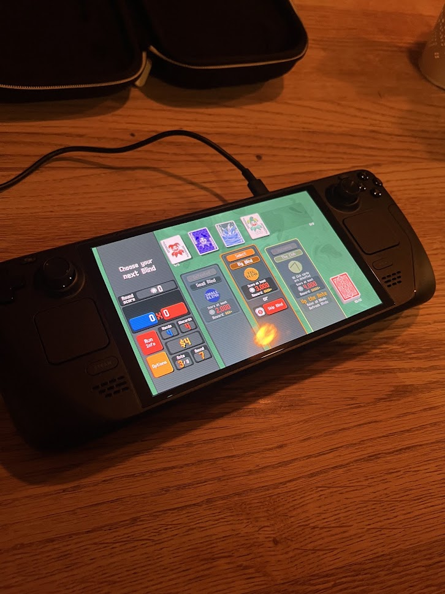
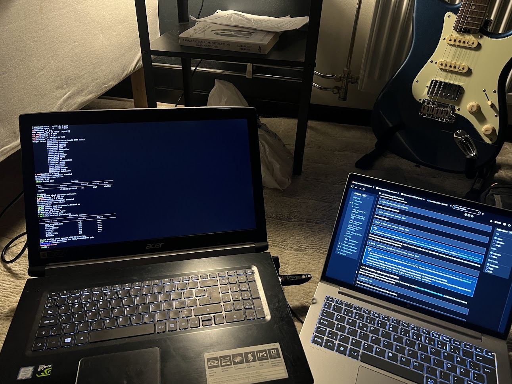
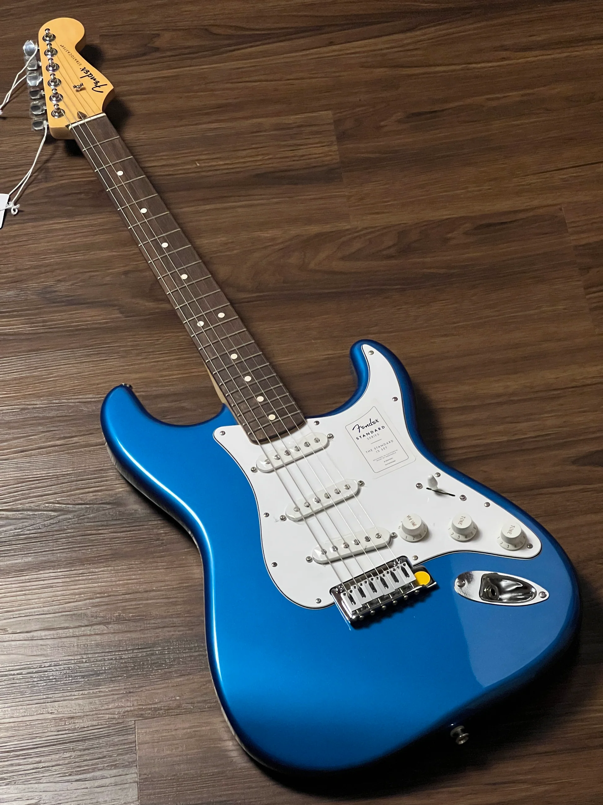

Information om mig
skriv något smart här.
Mina Intressen
- Musikproduktion
- Gaming
- Gitarrer / Spela Gitarr
- Datorer / Teknik
- Programmering
- Linux
Bilder på mina intressen









Card
This is a card, belive it or not.
Saker som jag inte gillar
Övrig information
Skolan jag går på är NTI Gymnasiet.